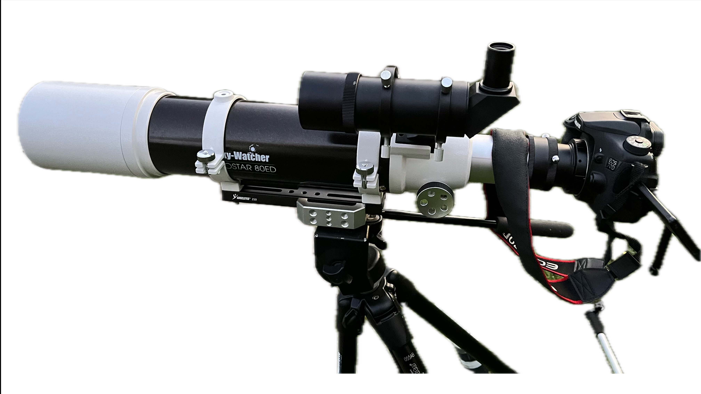
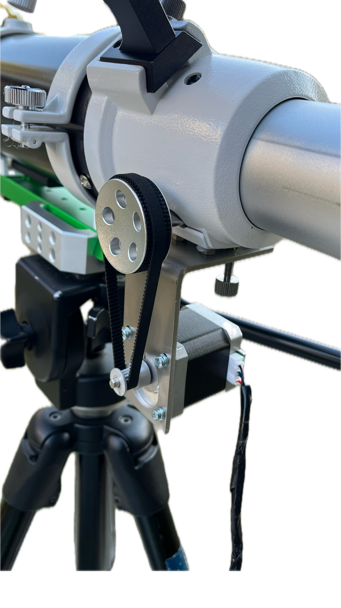
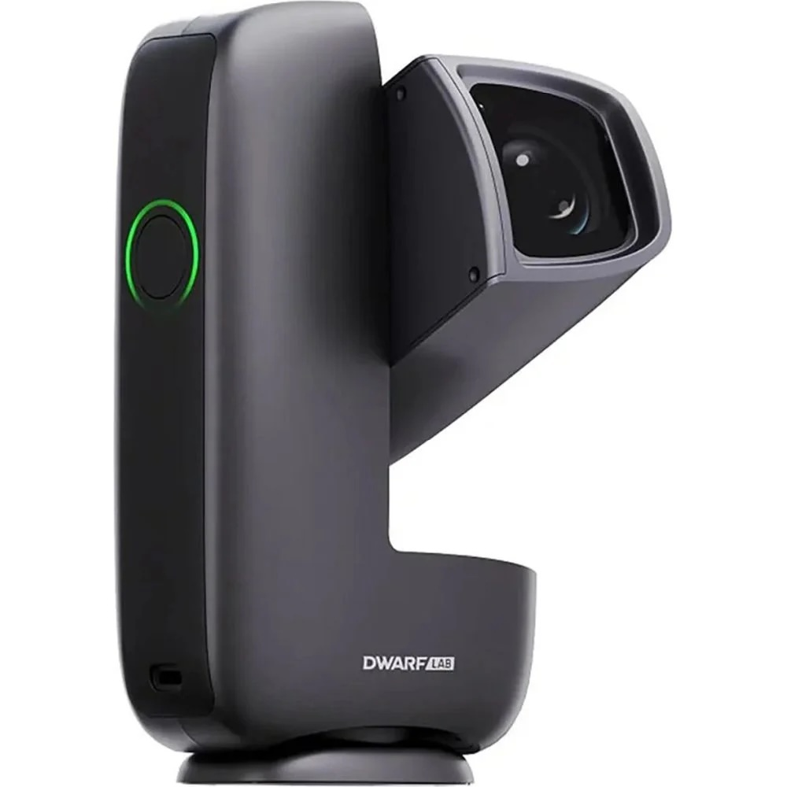
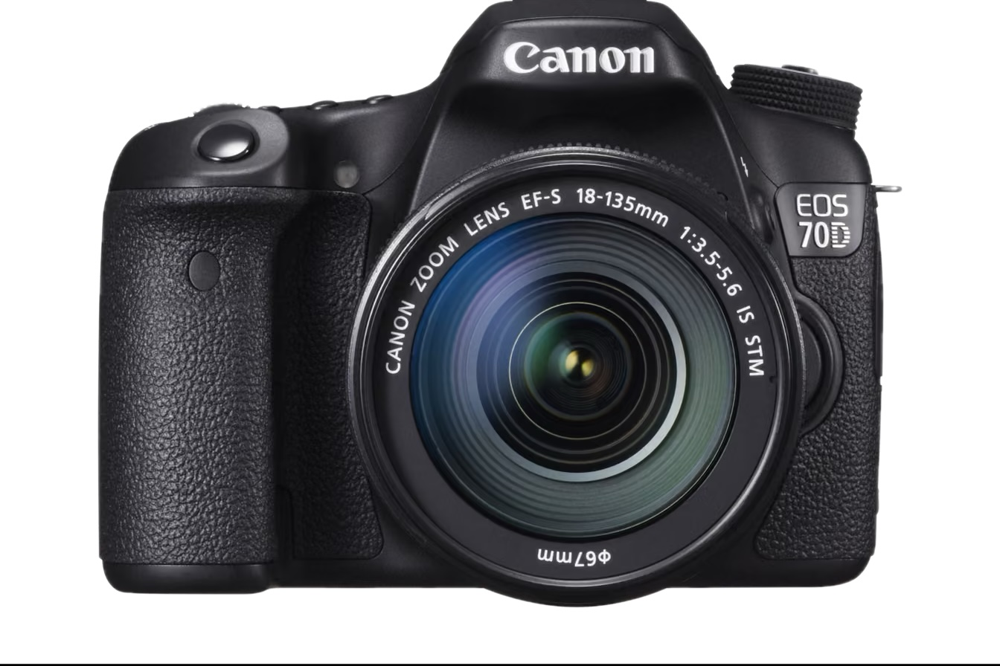
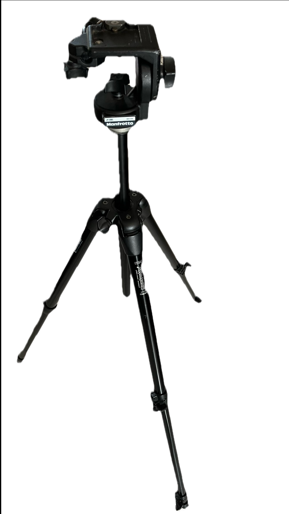

Mély-ég objektumok, bolygók és égi jelenségek megörökítése hazai égbolt alól.
Galéria felfedezése




Az év egyik legbőségesebb meteorraja, a Geminidák december 13–14. éjszakáján éri el a maximumát. Emellett a téli hónapokban kerülnek ideális helyzetbe az Orion csillagkép látványos ködei (M42, Lófej-köd) és a Rozetta-köd is.
Január elején a Quadrantidák meteorrajjal indul az év, tavasszal pedig a Tejút sávja helyett a távoli galaxishalmazok veszik át a főszerepet: az Oroszlán-hármas (Leo Triplet), a Szűz-halmaz és a Örvény-galaxis (M51) kerülnek a távcsövek célkeresztjébe.
A nyári hónapokban a Hattyú és a Nyilas csillagkép sűrű emissziós ködei (Észak-Amerika-köd, Pelikán-köd, Lagúna-köd) kínálnak hálás témát Duo-Band szűrővel, augusztus közepén pedig a Perseidák hullócsillagait vadásszuk a miskolci és bükki égbolt alatt.
A távoli ködök és galaxisok fénye rendkívül halvány. Egyetlen 15 vagy 60 másodperces nyers felvételen alig látszanak, ezért több tucat vagy akár több száz képet rögzítek ugyanarról az objektumról. Speciális szoftverekkel ezeket egymásra illesztve (stacking) a képzaj kisimul, és előbújnak a kozmosz finom gázfelhői.
A Duo-Band (keskenysávú) szűrők csak a csillagközi gázfelhők által kibocsátott speciális hullámhosszakat (hidrogén-alfa és oxigén-III) engedik át a szenzorra, miközben a közvilágítás zavaró fényét blokkolják. Ennek köszönhetően akár lakott területről is látványos részletességgel fotózhatók az emissziós ködök.
Az asztrofotózásban a tizedmilliméteres élességhiba is elmosódott csillagokat eredményez, ráadásul az éjszakai lehűlés miatt a távcső tubusa is enyhén összehúzódik. A Sky-Watcher Evostar 80 ED refraktoromra épített saját léptetőmotoros fókuszálóval kézzel való érintés, így remegés nélkül állítható be a tűéles fókusz.
Üdvözöllek a csillagvilag.com oldalon! Amatőrcsillagászként és asztrofotósként szenvedélyem az éjszakai égbolt szabad szemmel láthatatlan csodáinak megörökítése. A távoli emissziós és reflexiós ködöktől a spirálgalaxisokon át egészen a Hold krátereinek legapróbb részleteiig keresem a kozmosz rejtett struktúráit.
Az asztrofotózásban nemcsak maga a megfigyelés és a hosszú expozíciós sorozatok feldolgozása lelkesít, hanem a technikai kihívások és a barkácsolás is: a Sky-Watcher Evostar 80 ED refraktoromhoz például saját tervezésű, léptetőmotoros fókuszálót építettem, emellett a DWARF MINI okostávcsővel és Canon 70D fényképezőgéppel járom az éjszakai égboltot. Remélem, hogy a képeim és videóim neked is átadják a csillagos égbolt csendes varázsát!
Kövess Facebookon